Meet the characters! Here are the main characters you need to know! 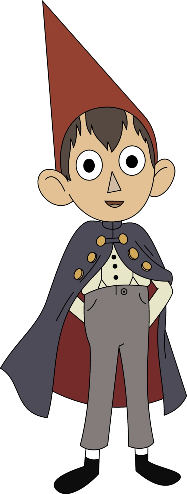 Wirt Wirt is the older half-brother of Gregory. He is the protagonist of the show, and views the world in a serious way, unlike his brother. He is determined and often makes a point of being a contrarian, which frequently leads the pair into trouble. He is voiced by Elijah Wood. Wirt is a tall, thin boy with dark brown hair and a red gnome hat. He wears a navy blue cape, grey pants, suspenders, and a white shirt. He is pessimistic but has a naive and childish side. Wirt struggles to remain optimistic throughout the series and tends to think negatively, making him an easier target for the Beast to bring down. He has low self-esteem and perceives himself as an outcast due to his sensitive interests, but this is shown to be false. Wirt tends to overreact and make situations worse than they are. However, by the end of the series, he matures and finds the strength to stand up to the Beast and accept his responsibility as a brother. 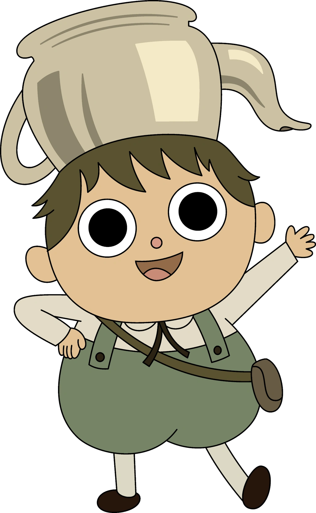 Greg Gregory, affectionately nicknamed Greg, is Wirt's younger half-brother. He is a very energetic boy who always has a smile on his face and very wild ideas on his mind. He's endlessly fascinated by everything, including things that would normally seem scary such as the ghost in Mad Love. He has a habit of wandering out on his own. He has a pet frog, which he found before his descent into the Unknown. He gives it a different name every chapter (Kitty, Doctor, George Washington, etc) but ends up naming it Jason Funderburker in Chapter 10. He also carries a rock (that was stolen from Mrs. Daniel's garden), that will randomly make Rock Facts. He is the deuteragonist of the show. He is voiced by Collin Dean. Gregory, a young and plump character in Over the Garden Wall, wears a white shirt with a brown ribbon, green overalls, black shoes, and a tea kettle on his head. Despite his innocence and naivete, he remains positive and unfazed by danger, believing that he can accomplish anything he sets his mind to. He often gets sidetracked and is content with marching to the beat of his own drum. Although he may annoy his brother, Wirt, with his optimism, he loves him and encourages him to express himself. His outlook remains unaffected even after their journey in The Unknown has ended, and he happily recounts it as a grand adventure. 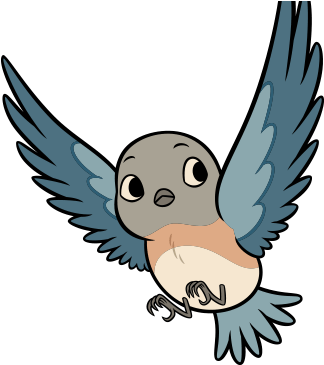 Beatrice Beatrice is the tritagonist and the false antagonist of the series, she is a talking bluebird that accompanies Wirt and Gregory, giving little lines of advice to them every now and then. and is described by her voice actor to be somewhat of a grumpy bird. Beatrice is a daughter among many other children (presumably 10), who previously lived in the Old Grist Mill where the Woodsman ground Edelwood. Her relationship with the two brothers evolve throughout the series, even though she isn't very openly caring. Most of the time, Wirt seems to believe that she doesn't enjoy the company of Gregory and himself. Beatrice is a bluebird with blue wings, orange breast, and white underbelly. In human form, she has red hair in a bun and wears a blue dress. She is depicted as clever and headstrong, emotionally distant, and guilt-ridden after her family's curse. Beatrice is a friend of Wirt and Greg, despite nagging them and pointing out their flaws. Her family misses and loves her, contrary to her belief that they resent her. Beast The Beast is the main antagonist of Over the Garden Wall. He is the monster of The Unknown and is feared throughout it. His goal is to catch the brothers, Wirt and Gregory, and turn them into Edelwood trees in order to fuel his lantern. The Beast is voiced by Samuel Ramey. The Beast is shown in silhouette with antlers, a humanoid shape, and glowing white or colored eyes in the forest. In the light, he is made of Edelwood, with twisted faces and branch-like antlers, and has two arms and no ears. He is manipulative, indifferent to suffering, well-spoken, and a master of deception. He has an even temperament but can lose his composure when threatened. He likes to sing a song for chopping Edelwood and another for his intended victims. 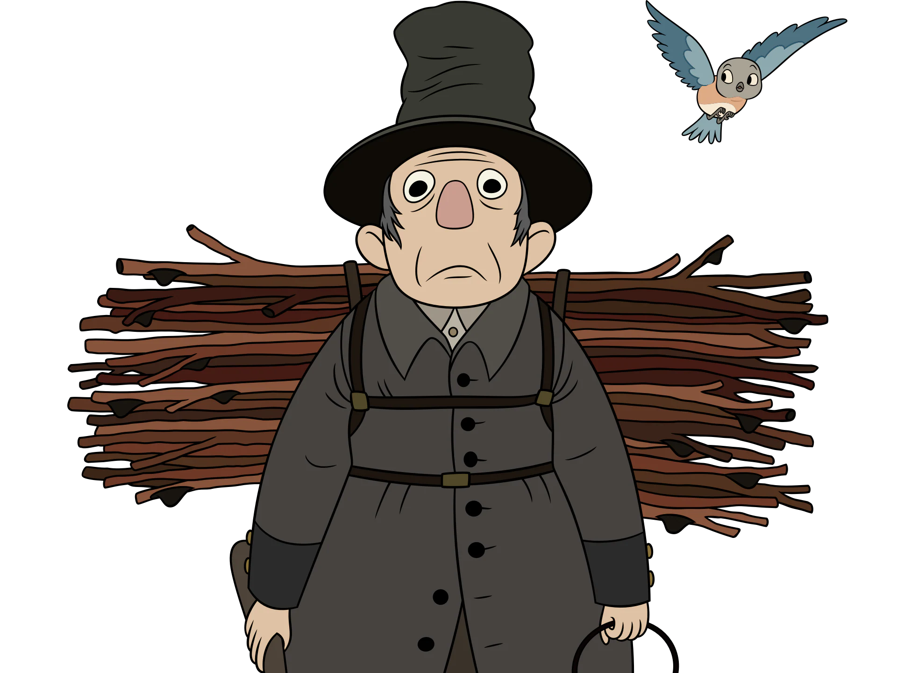 Woodsman The Woodsman is a character who appears in Over the Garden Wall. The Woodsman can potentially be seen as an ex-follower of the Beast. However, the Woodsman only chopped Edelwood trees as the Beast told him to so that his daughter's soul would stay lit in the Dark Lantern. This did not mean that he was a villain, often helping the two boys. The Woodsman is voiced by Christopher Lloyd. The Woodsman is a rounder man with short grey hair and black eyes, often seen scowling. He wears a grey hat, trench coat, white collared shirt, black suspenders, taupe brown trousers, and shiny dark boots. He carries an axe in his right hand for chopping Edelwood branches and a dark lantern in his left, stolen from the Beast. Originally, he was an introverted man who preferred books to the outdoors, relying on his family for balance and security. He became paranoid of the Unknown's forest after moving and losing his wife, keeping his daughter indoors. He is determined and protective of his daughter, but lacks compassion for strangers. Despite his grief, he remains diligent in fueling the dark lantern's flame, and has a moral compass that makes him good at heart. 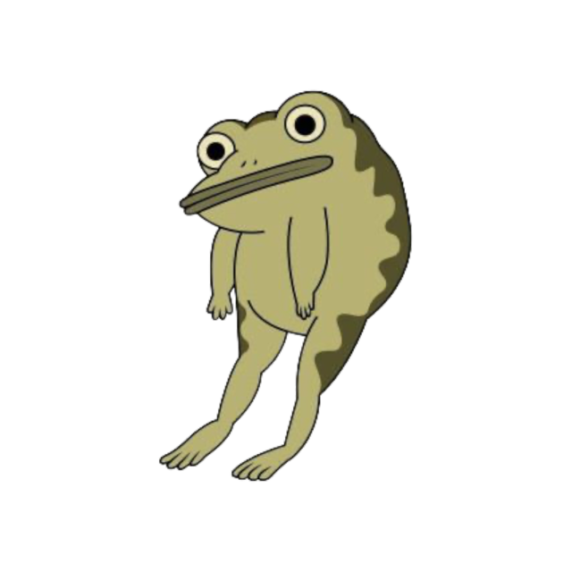 Jason Funderburker (The Frog) Gregory's pet frog is a character who appears in Over the Garden Wall. Throughout the story, the Frog appears to be a narrator of the brother's journey through the Dark Forest. He has many unnatural abilities that include the ability to talk (as well as sing) and play piano.He is voiced by Jack Jones. The frog's true origin is unknown; however, he shares a striking resemblance to the frogs on the Frog Boat. He is also seen singing the opening theme, "Into the Unknown", at the beginning of the show. In "Into the Unknown" Greg asks Wirt to go frog hunting with him. They do not end up going frog hunting, but Greg found it soon after he and Wirt crossed the garden wall. He states that they found it on their frog hunt, even though they did not officially go. Greg has trouble deciding on the frog's name and often changes it. 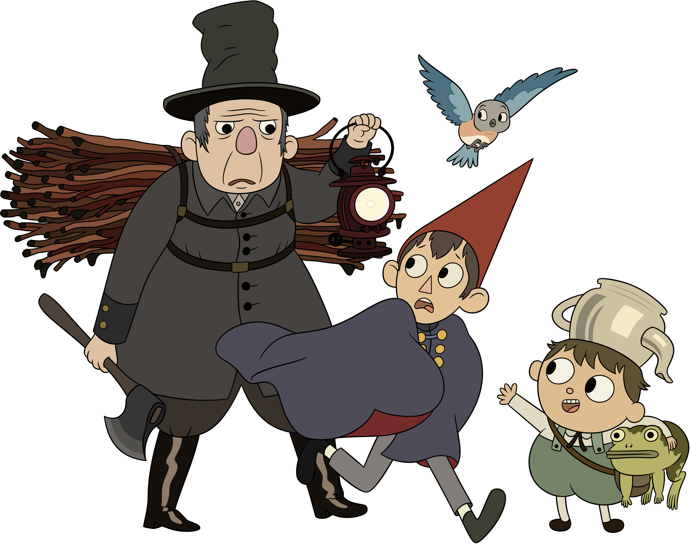
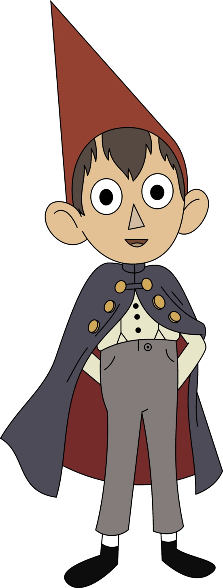 Wirt Wirt is the older half-brother of Gregory. He is the protagonist of the show, and views the world in a serious way, unlike his brother. He is determined and often makes a point of being a contrarian, which frequently leads the pair into trouble. He is voiced by Elijah Wood. Wirt is a tall, thin boy with dark brown hair and a red gnome hat. He wears a navy blue cape, grey pants, suspenders, and a white shirt. He is pessimistic but has a naive and childish side. Wirt struggles to remain optimistic throughout the series and tends to think negatively, making him an easier target for the Beast to bring down. He has low self-esteem and perceives himself as an outcast due to his sensitive interests, but this is shown to be false. Wirt tends to overreact and make situations worse than they are. However, by the end of the series, he matures and finds the strength to stand up to the Beast and accept his responsibility as a brother. 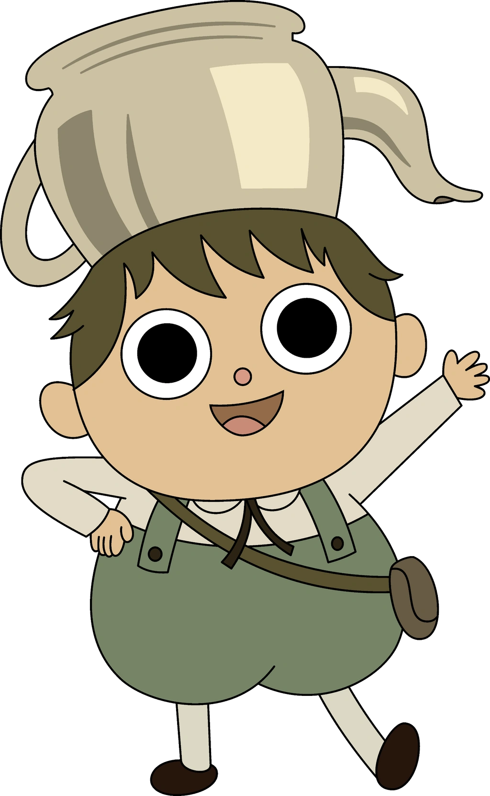 Greg Gregory, affectionately nicknamed Greg, is Wirt's younger half-brother. He is a very energetic boy who always has a smile on his face and very wild ideas on his mind. He's endlessly fascinated by everything, including things that would normally seem scary such as the ghost in Mad Love. He has a habit of wandering out on his own. He has a pet frog, which he found before his descent into the Unknown. He gives it a different name every chapter (Kitty, Doctor, George Washington, etc) but ends up naming it Jason Funderburker in Chapter 10. He also carries a rock (that was stolen from Mrs. Daniel's garden), that will randomly make Rock Facts. He is the deuteragonist of the show. He is voiced by Collin Dean. Gregory, a young and plump character in Over the Garden Wall, wears a white shirt with a brown ribbon, green overalls, black shoes, and a tea kettle on his head. Despite his innocence and naivete, he remains positive and unfazed by danger, believing that he can accomplish anything he sets his mind to. He often gets sidetracked and is content with marching to the beat of his own drum. Although he may annoy his brother, Wirt, with his optimism, he loves him and encourages him to express himself. His outlook remains unaffected even after their journey in The Unknown has ended, and he happily recounts it as a grand adventure. 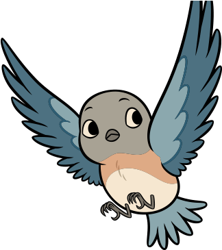 Beatrice Beatrice is the tritagonist and the false antagonist of the series, she is a talking bluebird that accompanies Wirt and Gregory, giving little lines of advice to them every now and then. and is described by her voice actor to be somewhat of a grumpy bird. Beatrice is a daughter among many other children (presumably 10), who previously lived in the Old Grist Mill where the Woodsman ground Edelwood. Her relationship with the two brothers evolve throughout the series, even though she isn't very openly caring. Most of the time, Wirt seems to believe that she doesn't enjoy the company of Gregory and himself. Beatrice is a bluebird with blue wings, orange breast, and white underbelly. In human form, she has red hair in a bun and wears a blue dress. She is depicted as clever and headstrong, emotionally distant, and guilt-ridden after her family's curse. Beatrice is a friend of Wirt and Greg, despite nagging them and pointing out their flaws. Her family misses and loves her, contrary to her belief that they resent her. Beast The Beast is the main antagonist of Over the Garden Wall. He is the monster of The Unknown and is feared throughout it. His goal is to catch the brothers, Wirt and Gregory, and turn them into Edelwood trees in order to fuel his lantern. The Beast is voiced by Samuel Ramey. The Beast is shown in silhouette with antlers, a humanoid shape, and glowing white or colored eyes in the forest. In the light, he is made of Edelwood, with twisted faces and branch-like antlers, and has two arms and no ears. He is manipulative, indifferent to suffering, well-spoken, and a master of deception. He has an even temperament but can lose his composure when threatened. He likes to sing a song for chopping Edelwood and another for his intended victims. 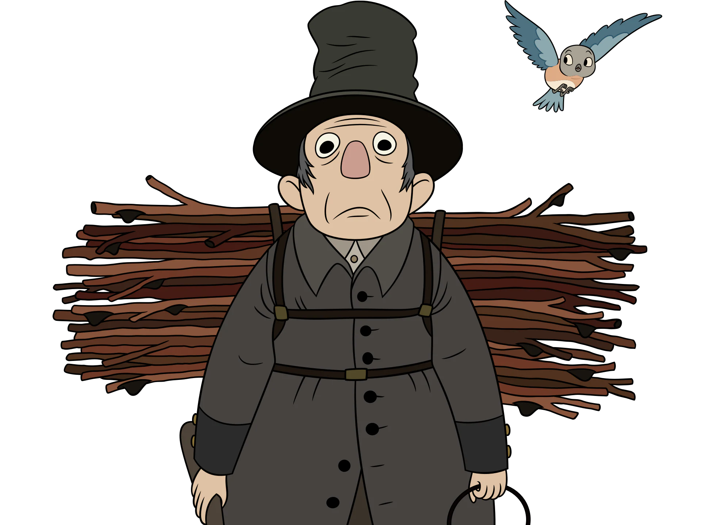 Woodsman The Woodsman is a character who appears in Over the Garden Wall. The Woodsman can potentially be seen as an ex-follower of the Beast. However, the Woodsman only chopped Edelwood trees as the Beast told him to so that his daughter's soul would stay lit in the Dark Lantern. This did not mean that he was a villain, often helping the two boys. The Woodsman is voiced by Christopher Lloyd. The Woodsman is a rounder man with short grey hair and black eyes, often seen scowling. He wears a grey hat, trench coat, white collared shirt, black suspenders, taupe brown trousers, and shiny dark boots. He carries an axe in his right hand for chopping Edelwood branches and a dark lantern in his left, stolen from the Beast. Originally, he was an introverted man who preferred books to the outdoors, relying on his family for balance and security. He became paranoid of the Unknown's forest after moving and losing his wife, keeping his daughter indoors. He is determined and protective of his daughter, but lacks compassion for strangers. Despite his grief, he remains diligent in fueling the dark lantern's flame, and has a moral compass that makes him good at heart. 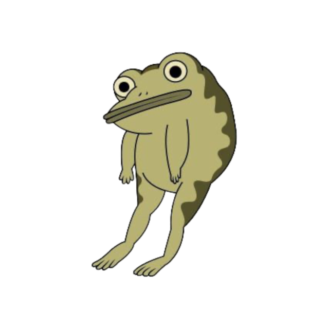 Jason Funderburker (The Frog) Gregory's pet frog is a character who appears in Over the Garden Wall. Throughout the story, the Frog appears to be a narrator of the brother's journey through the Dark Forest. He has many unnatural abilities that include the ability to talk (as well as sing) and play piano.He is voiced by Jack Jones. The frog's true origin is unknown; however, he shares a striking resemblance to the frogs on the Frog Boat. He is also seen singing the opening theme, "Into the Unknown", at the beginning of the show. In "Into the Unknown" Greg asks Wirt to go frog hunting with him. They do not end up going frog hunting, but Greg found it soon after he and Wirt crossed the garden wall. He states that they found it on their frog hunt, even though they did not officially go. Greg has trouble deciding on the frog's name and often changes it. 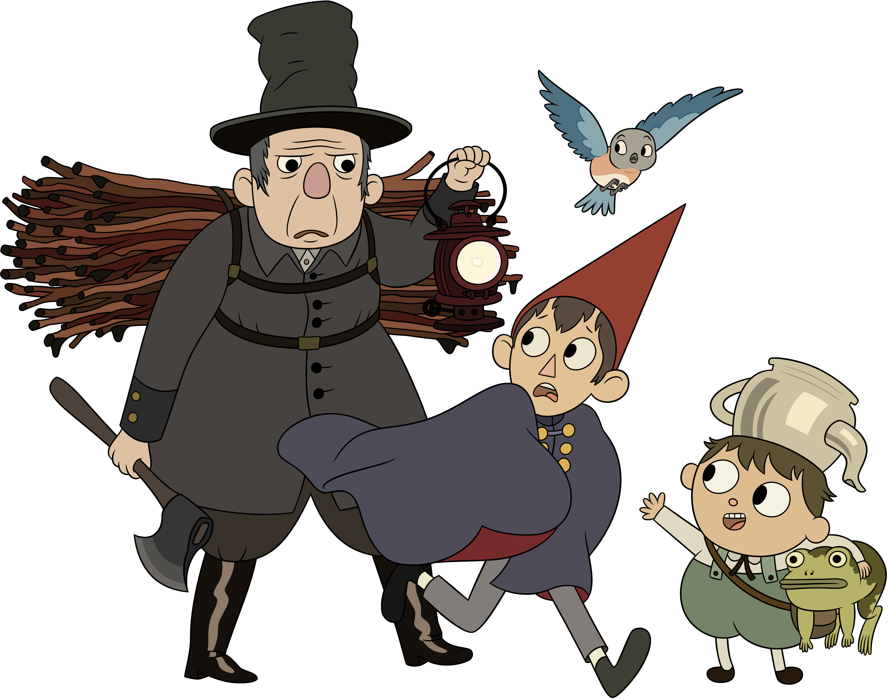